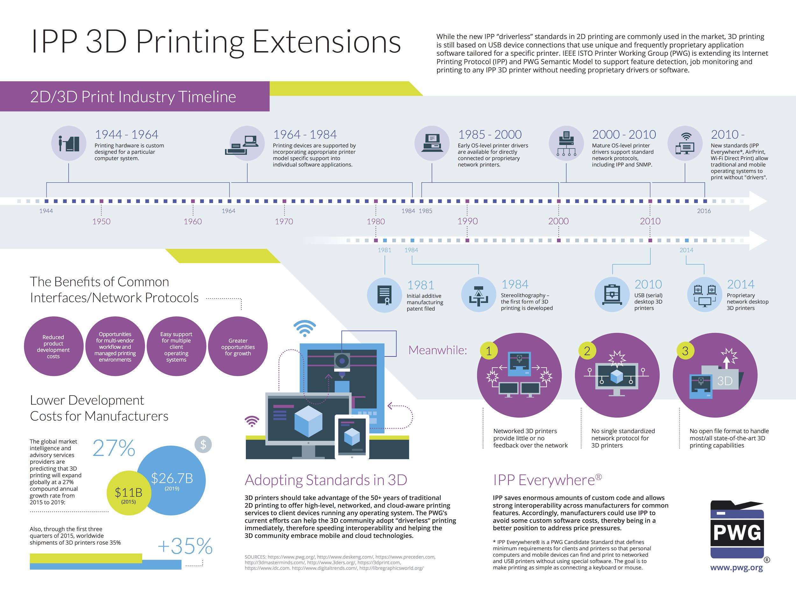

The Printer Working Group has developed an extension to the Internet Printing Protocol for 3D Printing. The extension leverages our existing network protocol and Job Ticket formats and existing high-level 3D file formats to describe the objects to print. The IPP workgroup has also developed a version of the PWG Semantic Model Print Job Ticket schema for 3D printing to support data exchange and embedding within common 3D file formats such as 3MF and 3D PDF documents so that user intent is preserved regardless of the transport or workflow used.
We welcome participation from all interested parties in the continued prototyping and development of these specifications.
The PWG and its predecessors have spent the last 60+ years defining and refining 2D printing, to the point that today you can print without using vendor-specific software or hardware. 3D printers can take advantage of the many years of traditional 2D printing to offer high-level, networked, and cloud-aware printing services to client devices running any operating system. IPP provides a flexible and secure network protocol for queuing jobs, monitoring the state of jobs and printers, and managing jobs and printers.
When combined with a high-level 3D file format, the proper job ticket attributes (print options), and service discovery (Bonjour) or directory (LDAP) protocols a client device can successfully print 3D objects to any printer using "generic" software.

Client devices query an IPP 3D printer for the available materials and capabilities (heated build platform, multiple material support, etc.) and then send 3D files to the printer, specifying the material(s) and other options to use for the print job. The client can then monitor the progress of the job and the printer status, including any available camera video of the build platform. All slicing happens on the printer.
3D Manufacturing File Format (3MF): 3MF offers a compact XML format with physical dimensions, named materials, and shared vertices. 3MF is supported by major CAD and slicer software and is a required file format for the IPP 3D Printing Extensions.
PDF: PDF 1.7 (ISO 32000-1) includes 3D support using the Universal 3D format ("U3D", ECMA-363) and PDF 2.0 (ISO 32000-2) will add support for the Product Representation Compact format ("PRC", ISO 14739-1:2014) format. Both U3D and PRC are binary file formats with named materials. PRC also includes manufacturing tolerance metadata. PDF is a recommended file format for the IPP 3D Printing Extensions.